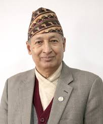

Home
About
Nepalese Paper Money
Nepalese Coins

Biography:
Dr. Yuba Raj Khatiwada was 15th governor of Nepal.He was the governor from March 22, 2010 - March 19, 2015.Signatue of Dr. Yuba Raj Khatiwada can be seen on the currency of Rs 5, Rs 10, Rs 20, Rs 50, Rs 100, Rs 500 & Rs 1000.